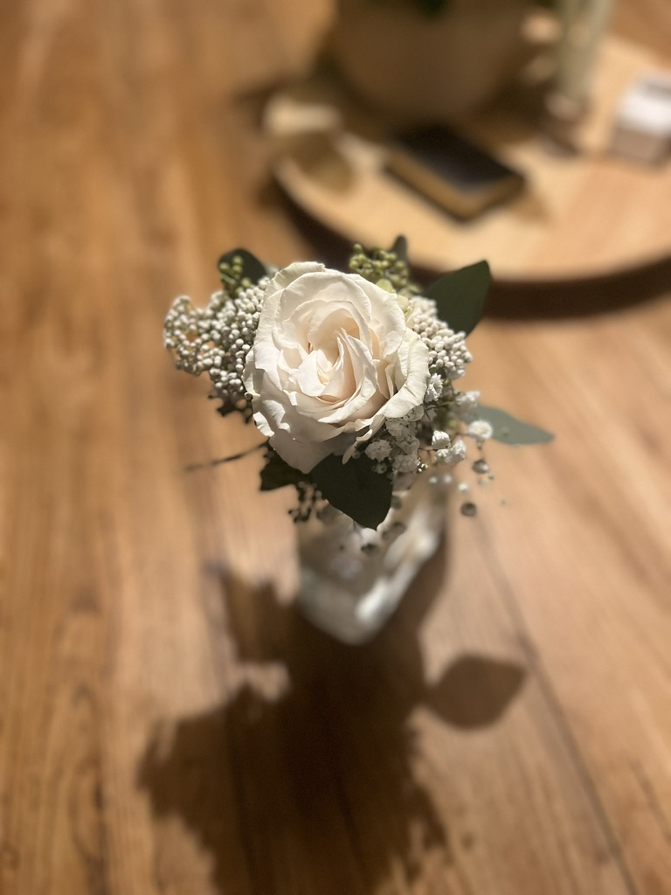
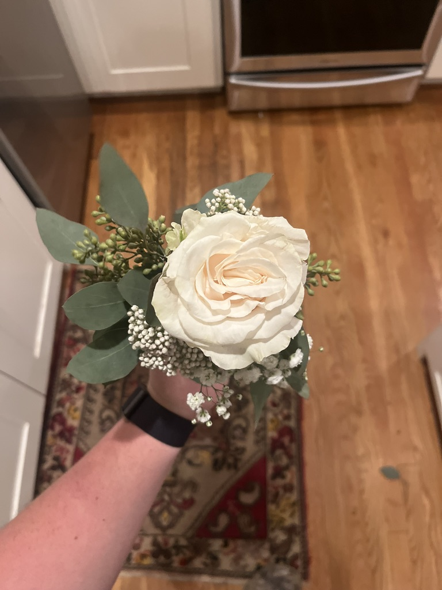

Hobby
Handmade bouquets for the people who matter.
I make bouquets for prom and homecoming dates — it started as a thoughtful gesture and turned into something I genuinely enjoy. There's a real art to putting together flowers that look great and feel personal.
It's one of those hobbies people don't expect from me, but it's become something I really look forward to.

